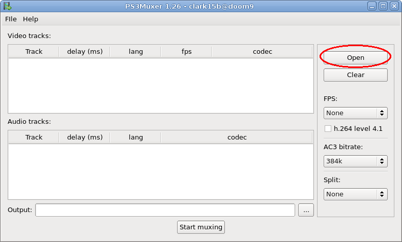
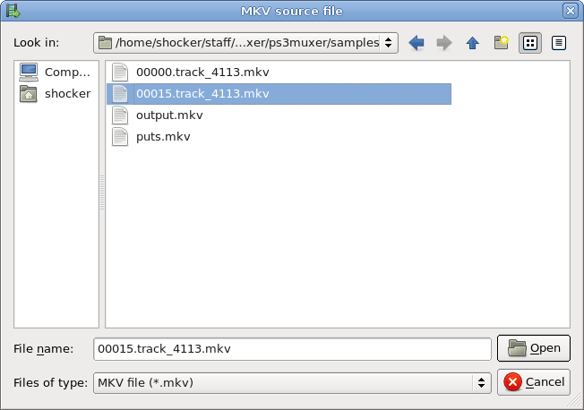
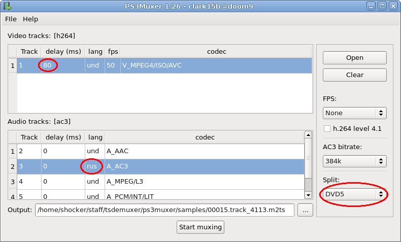
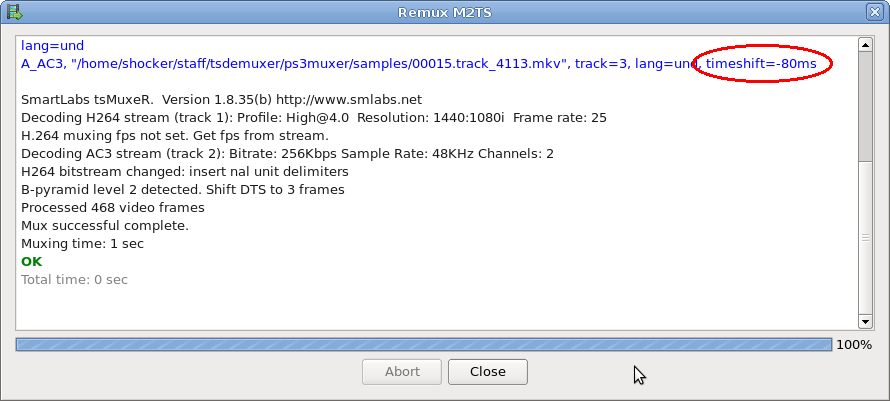

PS3Muxer - mkv video to PlayStation 3 / PlayStation 4 / XBox One converter
How to remux mkv to PS3 (PlayStation 3), PS4, X1 m2ts file. PS3Muxer is a new very simple program which will remux mkv file with h.264 video and AC3/DTS/LPCM/AAC audio to a M2TS file which is playable on the Sony PlayStation3 (try xupnpd in your router for watch multicast or unicast IPTV on PlayStation3).Donate
www.paypal.me/clark15bShare
News:
- 2011-02-15 Delay detection fix in v1.30
- 2011-02-01 Mac OS X 10.6.4 build v1.29
- 2011-01-27 Two-pass mode for remux compressed Matroska files in v1.29 (new mkvtoolnix)
Features:
- No video transcoding;
- Audio transcoding if track codec differs from AC3;
- Use of the delay and fps information from the MKV container;
- External audio tracks;
- Batch processing;
- Multi-audio (You can choose more than one audio track);
- Video codecs: h.264, VC-1, MPEG-2 (PS3 will show only h.264 and it is possible MPEG2);
- Audio codecs: AC3, DTS, AAC, MP3, LPCM (for AC3 transcoding it is not required);
- Possibility of manual updating of language and delay of tracks;
- Possibility of splitting a file into parts;
- Possibility of changing a h.264 profile and AC3 bitrate;
- Windows, Mac OS X and Linux support (QT GUI);
- Free source code.
For film viewing on PS3 it is better to use DLNA media server: xupnpd (You can copy file to internal HDD).
Downloads:
Pre-compiled binary build here.Awards:

User manual:
1) Start the program and push "open" button
2) Select MKV source file

3) Choose video and audio tracks (use "Ctrl" button for multi-selection). You can update language, delay, and split chunk size. Then press "Start Muxing" button

4) Enjoy

License: GPL
Copyright (C) 2011-2015 Anton Burdinuk
E-Mail: clark15b@gmail.com